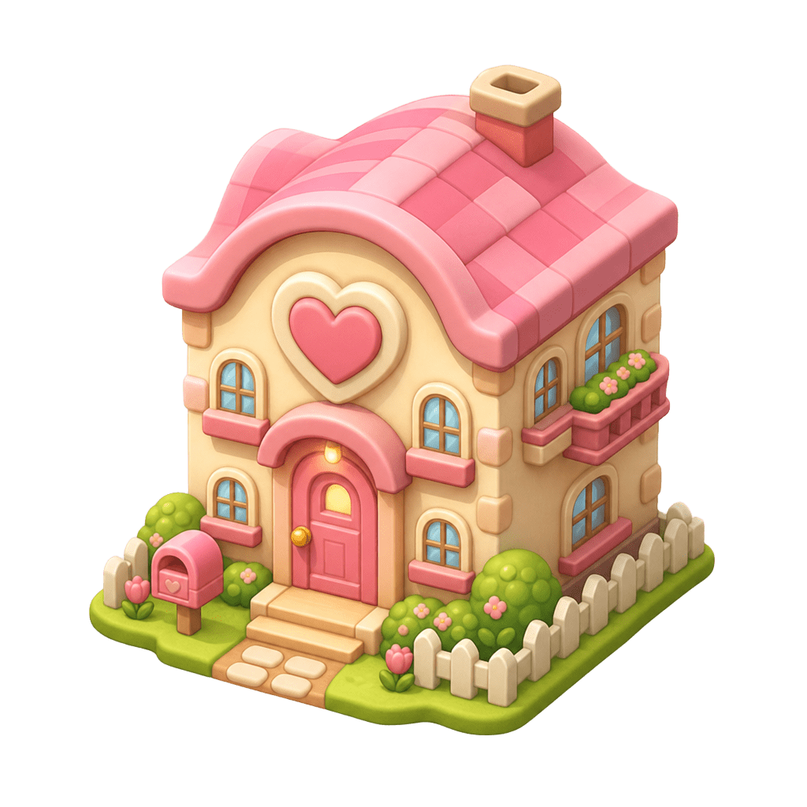
Amis Discord
Ajoute tes potes sur l’île, déplace-les, visite leur chambre.
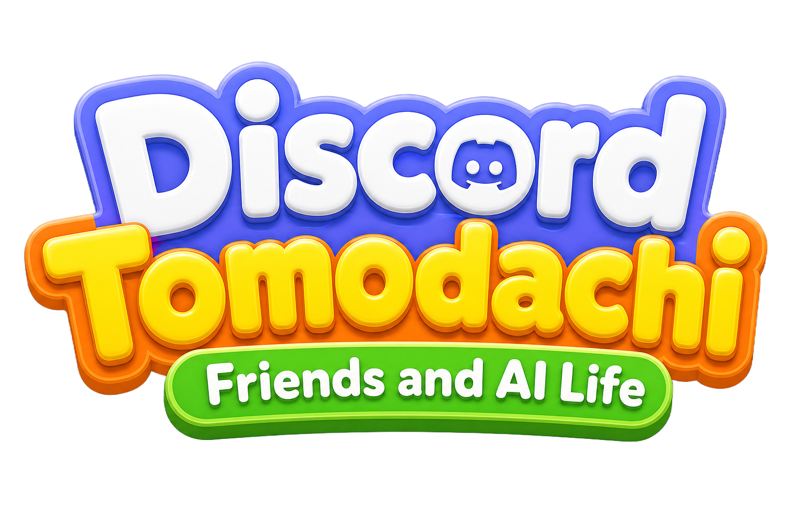
Clique pour entrer
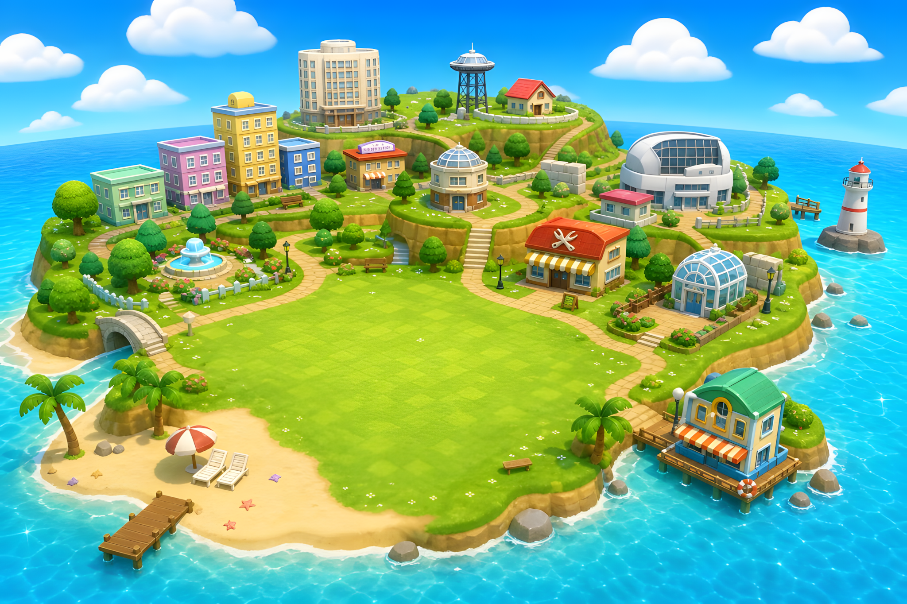
Friends and AI Life
Tes amis Discord vivent sur ton île. Une IA apprend ta façon de parler — le tout reste sur ton PC.
Tout ce que tu aimes de Tomodachi, branché sur Discord.

Ajoute tes potes sur l’île, déplace-les, visite leur chambre.
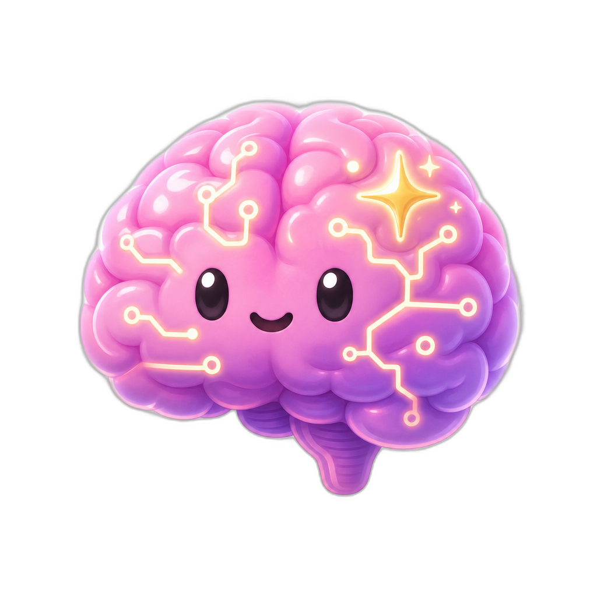
Elle s’entraîne sur tes conversations locales et répond dans ton style.
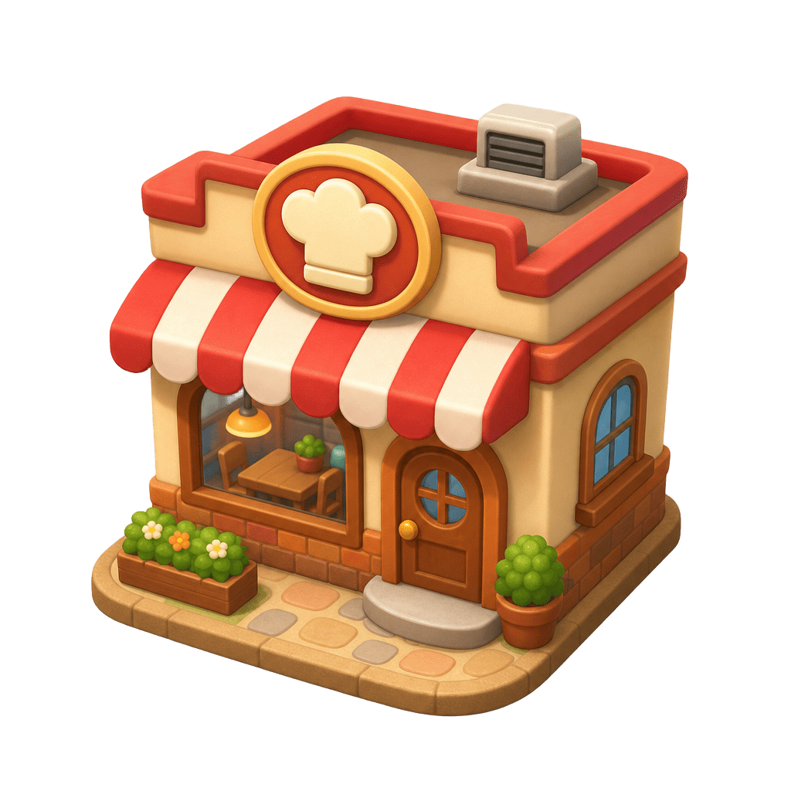
Offre un gâteau, du sushi… augmente le bonheur de tes amis.
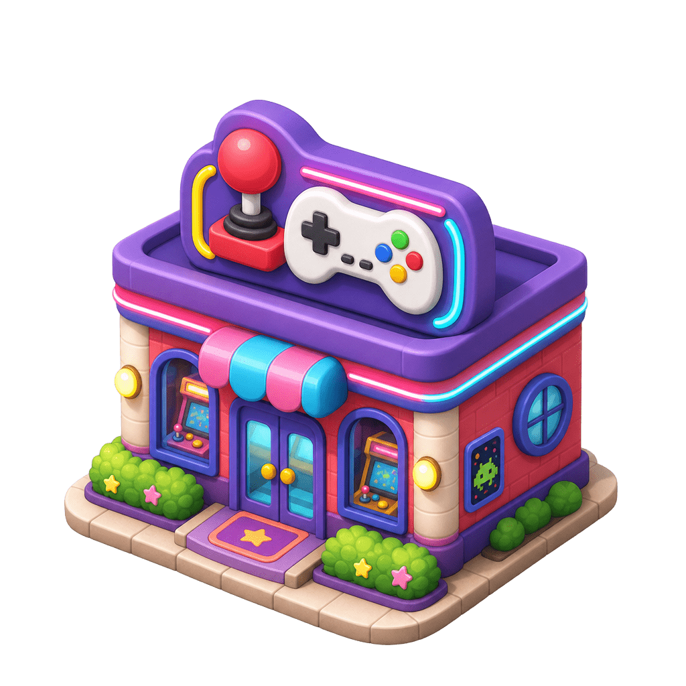
Gagne des pièces, quiz, studio dessin et plus encore.
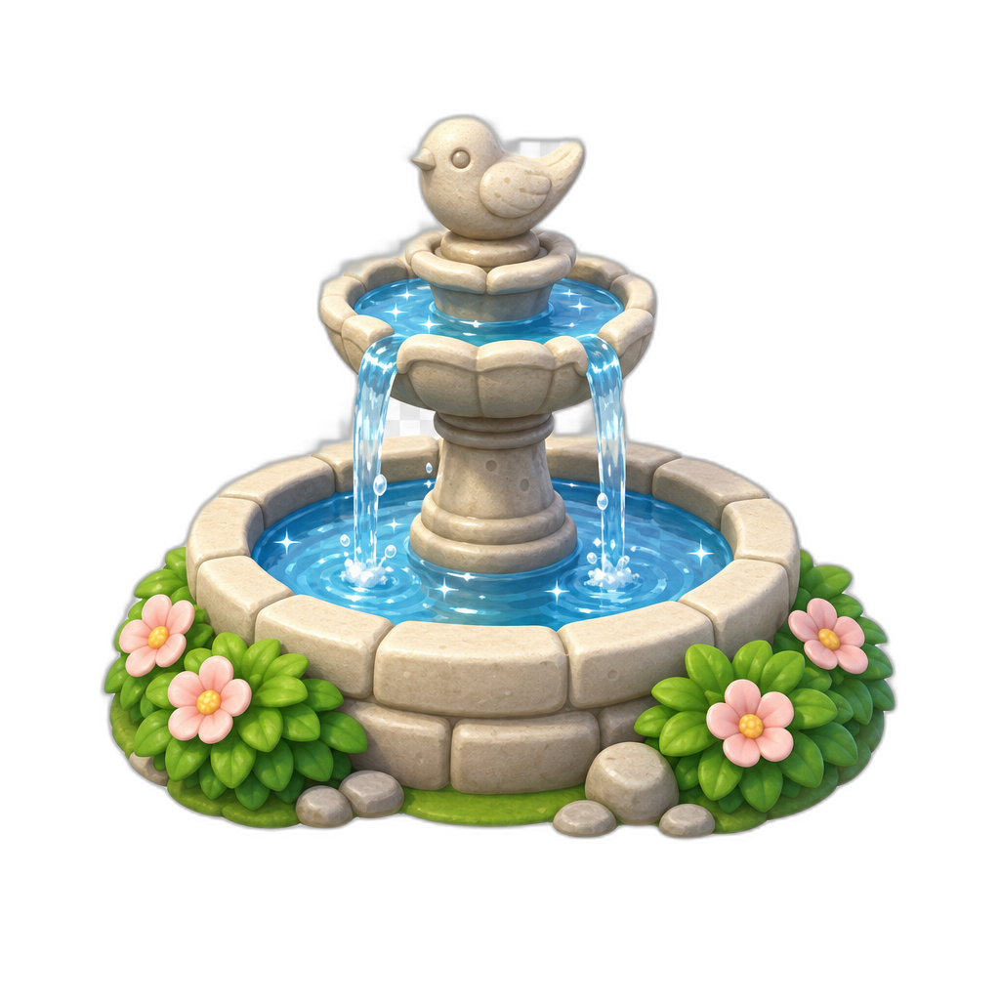
Plante, fontaine, ballons — l’île change avec le temps.
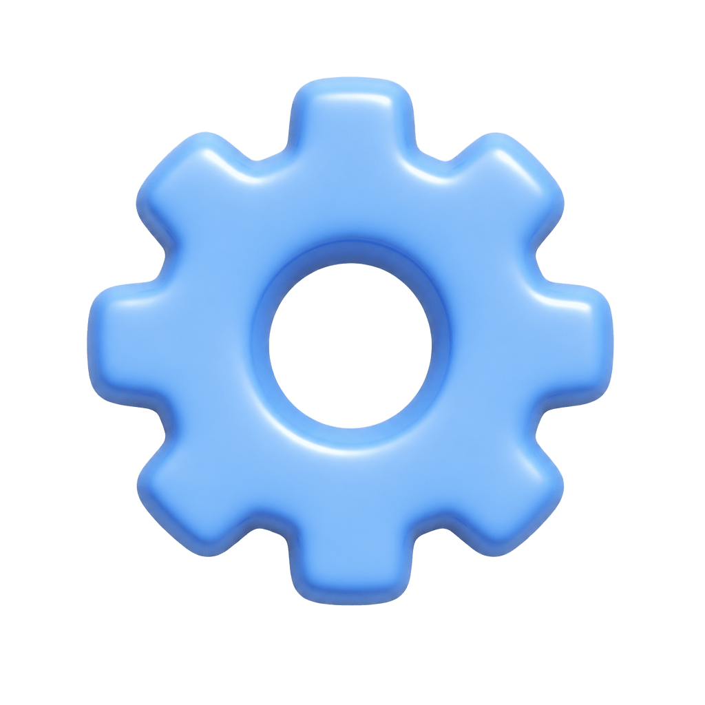
Token Discord sur ta machine. Pas de cloud opaque pour tes DMs.
L’ambiance du jeu, sans fioritures.
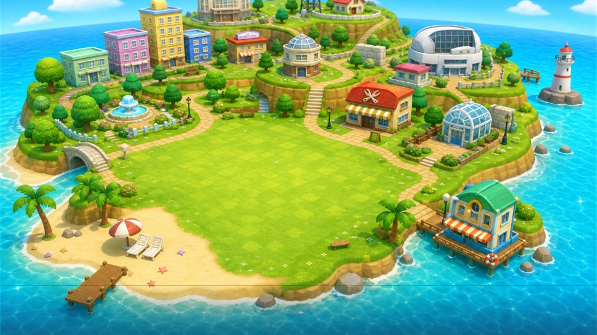
Colle ton token dans l’app. La passerelle démarre en local.
Choisis qui vit sur l’île — ils apparaissent avec leur avatar.
Elle lit le contexte, tape comme toi, et envoie (si tu actives).
Première fois ? Lila te réveille sur l’île, te montre les bâtiments, et t’aide à ajouter ton premier ami. Sur ce site, clique Découvrir avec Lila pour une visite guidée des systèmes — café, jeux, chambres, IA et plus.
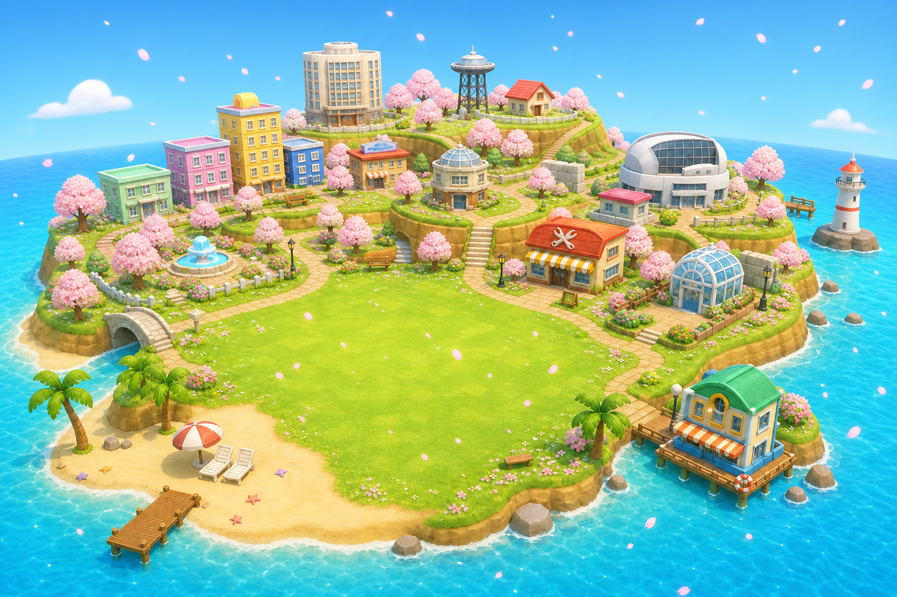
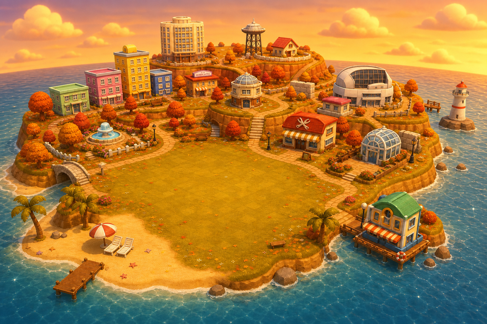


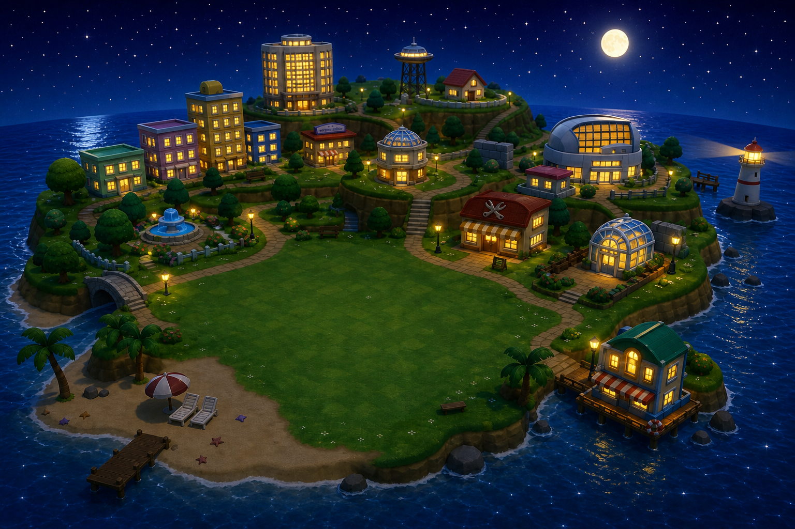
Le logiciel vérifie que tu es sur le serveur officiel et que tu as le rôle Licencié. Pas de clé obscure — ton Discord suffit.